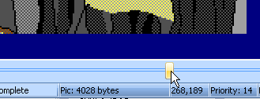
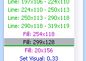
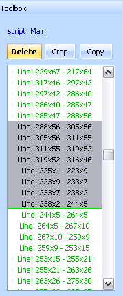
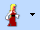
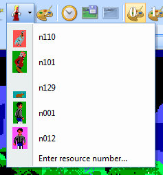
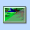

Pic Editor¶

The picture editor shows the pic itself in the main window, and the picture command list on the right. While SCI1 and above support bitmapped graphics, SCI0 pics are actually a series of vector drawing commands, and the editor reflects that “limitation”. Bitmaps can be converted into vector drawings for SCI0, but the process is inefficient, so you need to get used to thinking like the editor.

An example of how a scene from Laura Bow is drawn in vector graphics
Pics consist of three “screens”:
- The visual screen, which is what you see in the game.
- The priority screen, which controls which parts of the picture appear in front or behind the ego. This gives the games their 3D feel.
- The control screen, which controls events that happen to characters in the game.
You can view each of these screens by clicking on the appropriate button. You can also use the F2, F3 and F4 keys to switch between visual, priority and control screens. This is handy when you’re already in the middle of drawing something with the mouse and you need to check a different screen.
This shows the three screens comprising a pic: The visual screen, the priority screen (depth layers) and the control screen (game interactions)
In all cases, pics are just a series of drawing commands that are replayed when the image is drawn in the game.
Note
For SCI1 and above, SCI supports bitmaps for backgrounds, but the control and priority screens are still vector-based.

A comparison of vector EGA vs bitmapped VGA pic backgrounds (from the original Quest for Glory and its VGA remake).
Drawing methods for the different screens for various SCI versions:
| Version | Visual | Priority | Control |
|---|---|---|---|
| SCI0 | Vector | Vector | Vector |
| SCI1 | Bitmap and Vector | Vector | Vector |
| SCI1.1 | Bitmap | Vector | Vector |
| SCI2 | Bitmap | Bitmap | n/a |
Priority screen¶
The priority screen defines depth layers to your background. As characters move around in your game, they are assigned a priority value (ranging from 0 to 15) by the game engine. Their priority depends on their current y coordinate (generally at their feet). If a character’s priority is equal to or greater than the background pixel behind it, it will appear in front of the background. Otherwise, it will be oscured.

On the left, the box (pri 9, blue) is obscured by the waterfall and rock (pri 10, lime). On the right, the box has moved lower and changed priority. It is now pri 11, and appears in front of the waterfall and rock.

Choosing a priority value to draw with.
Control screen¶
The control screen is used to prevent (or permit) the ego (or any character) from moving in certains areas. It can also be used to trigger in-game events.
In SCI0 and SCI1, characters are generally set up to treat control value 15 (ctlWHITE) as impassable. Use this to define boundaries for your charactrer (in SCI1+, polygons are generally used for this purpose). Other colors may be used to trigger doors and such, by checking in code if a character is standing on a control value of a certain color.
Moving around¶
Since the picture resource consists of a series of vector commands, you need a way to move around to different points. Any drawing commands you do are added to that particular spot in the picture.
Slider bar¶
The quickest and most obvious way is to use the slider bar at the bottom of the screen. It shows the current position, and lets you instantly move to another position.
Command list¶
You can also click on a command in the Toolbox pane, and the picture will move to that point. A thin green line reminds you exactly where you are positioned.
History tool¶
When your picture gets big and complex, it can often be difficult to quickly narrow in to a particular position. If you need to go to the spot where a pixel last changed its colour, the history tool will do that. Left-clicking on a part of the pic will bring you to the point just before that pixel changed colour. Right-clicking will bring you just after.
Zooming¶
Use the zoom tool  to zoom in (left-click) or zoom out (right-click) on the pic. You can also use CTRL-mouse wheel, or CTRL-minus and CTRL-plus.
to zoom in (left-click) or zoom out (right-click) on the pic. You can also use CTRL-mouse wheel, or CTRL-minus and CTRL-plus.
Drawing tools¶
There are three main drawing tools: pen, fill and line. Unlike SCI Studio, SCICompanion doesn’t make you choose between “short” and “long” versions of them. The editor will automatically use the most space-efficient commands when saving the pic to the game file.
Pen tool¶
Important
This section applies to SCI0 and SCI1 only
The pen tool  requires a bit more explanation, and offers more functionality than in SCI Studio.
The 32 options of pen shape, size, and pattern are chosen from the Pen Style button on the toolbar.
A preview of the pen (e.g. what will happen when you click) is shown as you move the mouse cursor over the image.
If you are using a “pattern”, the pattern will change randomly with each click (SCI Studio does not expose this
functionality of pic resources). This should let you get more natural looking transitions between areas of different colours.
You can disable random patterns in the Pen Style dialog.
In either case, right clicking will cycle through the next pattern (128 different patterns for each size and shape).
requires a bit more explanation, and offers more functionality than in SCI Studio.
The 32 options of pen shape, size, and pattern are chosen from the Pen Style button on the toolbar.
A preview of the pen (e.g. what will happen when you click) is shown as you move the mouse cursor over the image.
If you are using a “pattern”, the pattern will change randomly with each click (SCI Studio does not expose this
functionality of pic resources). This should let you get more natural looking transitions between areas of different colours.
You can disable random patterns in the Pen Style dialog.
In either case, right clicking will cycle through the next pattern (128 different patterns for each size and shape).
The Pen tool is not available on SCI1.1 and above.
Fill tool¶
The fill tool  is one of the biggest sources of frustration with people drawing their own pics,
because it only allows you to fill “blank” (previously unfilled) areas.
I suppose Sierra did this so the artists would be forced to be space efficient.
At any rate, it is an annoying but unavoidable feature. Design your pic with this in mind.
is one of the biggest sources of frustration with people drawing their own pics,
because it only allows you to fill “blank” (previously unfilled) areas.
I suppose Sierra did this so the artists would be forced to be space efficient.
At any rate, it is an annoying but unavoidable feature. Design your pic with this in mind.
Another important thing to mention about the fill tool concerns dithered colours where one of the colours is white. If you have, say palette 1 where color 5 is composed of yellow and black; and palette 2 where color 5 is composed of yellow and white; then you might have a problem. Fills will look different because often dithered colours that include white will let a fill leak through a spot where it would not if it didn’t include white. If your picture looks really messed up when viewing with a different palette, it may be due to this.
Line tool¶
 This tool is fairly straightforward. Left click starts a line, right click ends a line.
This tool is fairly straightforward. Left click starts a line, right click ends a line.
Tip
Holding down SHIFT while drawing a line will snap it to horizontal or vertical
Choosing a color¶
 At any one point, the drawing takes place on any of the three screens.
The colour used on each screen, if any, is controlled by the “V”, “P” and “C” buttons on the toolbar.
If nothing appears when you draw, it is because you are not drawing on the screen at which you are currently looking.
At any one point, the drawing takes place on any of the three screens.
The colour used on each screen, if any, is controlled by the “V”, “P” and “C” buttons on the toolbar.
If nothing appears when you draw, it is because you are not drawing on the screen at which you are currently looking.
To disable drawing on a particular screen, uncheck the checkbox next to the appropriate button.
The command list¶
In the picture editor Toolbox is the command list. It shows the commands around the current position in the editor. It can be used to move to another position by clicking on a command.
Note
For SCI1.1 pics, the pic command list is hidden by default, and instead the polygon list is shown. You can click on the Polygons or Commands tabs to switch between the two.
Deleting commands¶
Here you can select multiple commands and delete them, or crop all commands after a particular point.
Copying and pasting commands¶
More interestingly, you can also copy commands from here, and paste them into other pics - even in other running instances of SCICompanion - so you can copy and paste commands from one game into another. It takes some practise to select the correct set of commands to copy. Generally it is best to click on the command you want to start with, and then progressively scroll down the list and use the SHIFT-click to find the end command. Then click Copy at the top of the command list.
When you paste a series of commands, they will be added to the pic in a special mode that allows you to reposition them. You may see strange behaviour as you move the drawing commands around the screen, but that is due to the vector nature of the commands.

Tip
You can stretch or shrink the pasted commands using the arrow keys, and you can rotate them by dragging on the corners.
The fake ego¶
 This feature lets you superimpose an image of the ego (or any view resource in the game) onto the pic, and drag it around. It interacts with the priority screens, control lines and polygons, and can help you size elements of the picture correctly.

By default, the view resource used for the “ego” is the one that is currently selected in the resource explorer. In the preferences dialog, you can also specify that a simple box should be used instead. You can also choose recent views from a dropdown list, or enter a view resource number manually.
If nothing shows up when you turn on the fake ego, it may just be hidden behind a higher priority object in the picture. In that case, right clicking on the picture will center the ego under your mouse cursor.
Right clicking on the fake ego offers a number of options with regards to how the ego interacts with the pic.
Priority bands¶
The priority bands (corresponding to the “depth layers”) can be toggled on and off with the priority lines  button.
They show the boundaries of the priority zones.
button.
They show the boundaries of the priority zones.
In SCI1 and above, these priority bands are adjustable. To do so, click on the boundary between to priority bands just outside the right edge of the pic, and drag the boundary.
Tracing image¶
You can paste a bitmap into the pic editor, and it will be used as a tracing image. You can also open an image from a file  .
.
The tracing image can be turned on or off , and its opacity can be set:

Transforming coordinates¶
If you realize you need to make some changes to an earlier portion of the pic, it can be tedious to scroll back to the desired position to make those modifications. Instead, you can change your line, fill and pen commands instantly with the Transform Coords mode .
This mode works in combination with a drawing tool (line, pen, fill or ellipse). When it’s active, the points that comprise the drawing commands in the area of the mouse cursor will “light up”. You can then click on them and drag them around.
Dragging the point between two lines to change the image
EGA pic palettes¶
Important
This section applies to SCI0 only
EGA pics support a fixed palette of 16 colors. However, dithering can be used to mix any two colors together. So the visual screen of EGA pics is actually drawn with a 40 color, customizable palette.
Hero’s Quest used dithering extensively.
Each pic can have up to 4 palettes of 40 colours, which can be switched during gameplay. Using different EGA palettes can be useful if you need the same pic resource to be used for both day and night scenes, for instance.
The 16 natural EGA colors on the bottom, and the 40 customizable dithered colors on top.
The palettes are chosen using the palette button  in the toolbar.
This brings up a dialog where you can assign colours to each of the 40 positions of each palette by right
and left clicking on the source colours at the bottom. When you close the dialog, the palette is set in the command stream,
at the particular spot in the pic. So you can change the palette many times through the sequence of commands that makes up the pic.
in the toolbar.
This brings up a dialog where you can assign colours to each of the 40 positions of each palette by right
and left clicking on the source colours at the bottom. When you close the dialog, the palette is set in the command stream,
at the particular spot in the pic. So you can change the palette many times through the sequence of commands that makes up the pic.

Comparison of day vs night scene in Quest for Glory. This uses the same pic resource rendered with different palettes.
Write entire palette¶
If you check this box, then the entire 40 colours are written into the pic’s command stream. This may seem inefficient, but it is may be the right thing to do, as the alternative has some often undesirable effects. If you only write the colours you changed to the command stream, then these colours become “locked”. That is, no matter which palette the game uses to draw the pic, that colour index will always be drawn with palette 0’s colour.
Preview palette¶
Generally, you insert palette commands at a particular spot in the pic (e.g. near the beginning). If you want to see what the final result looks like as you try out different colours, you can check the preview palette box. It will temporarily move the position of the pic to the end, while you manipulate the colours.
Converting a bitmap to a vector drawing (SCI0)¶
Important
This section applies to SCI0 only
SCICompanion has the ability to take an image file (or an image from the clipboard) and convert it into vector commands that can be added to your pic.

The Convert Bitmap dialog
The conversion process works as follows:
- Choose Pic->Import bitmap to pic. This will open a dialog. If an image is on the clipboard, it will appear on the left. Otherwise, open an image using the Browse button.
- Adjust the picture using the Brightness, Contrast and Saturation controls.
- Click the Convert button. A progress bar will animate as the conversion takes place, and the resulting image will appear on the right.
- Check the image size - is it small enough to be a SCI0 pic resource? (less than 64000 bytes)
- The options on the right control the conversion process - which colours are allowed, and how many to use. Selecting different options can have a big effect on picture size.
- Once you are satisfied with the result, click Accept. The vector commands that make up the image will be added to your pic at the current location.
Importing a VGA pic background (SCI1+)¶
Important
This section applies to SCI1 and up only
VGA pics can use bitmapped graphics for the visual screen. To set the background for a VGA pic, click on Set background in the Toolbox pane, or choose Pic->Import bitmap to pic.

The Import Background dialog
You’ll note that this looks fairly similar to Import Image dialog for view resources. As in that case, you have three palette options:
- You can have SCICompanion generate a palette automatically, replacing the selected colors of the existing palette of the pic
- You can try to map colors to selected colors of the existing palette (using either RGB or CCIR color matching)
- You can use the palette included in the image file, if available (for instance, .gif files may include a palette).
You also have control over which palette indices are actually used. One difference is that by default, the “non-fixed” palette indices from palette 999 are used. This is generally what is desired for pic backgrounds.
If you want to customize which indices are used, you can check or uncheck the Only use x free palette entries checkbox to quickly control which palette indices are used, or you can manually select them in the palette and press the refresh button.
There is also an option to overlay an image onto an already existing background (this can be useful for things like palette cycling), in addition to all the same dithering options available in the Import Image dialog.
Editing a VGA pic palette¶
Important
This section applies to SCI1 and up only
The current palette for VGA pics is shown at the bottom of the Toolbox pane, below the command and polygon lists.
Choose Pic->Edit palette or click the palette button in the Toolbox pane to invoke the Palette Editor dialog.
See the section on palettes for more information on the Palette Editor dialog.
Polygons¶
Important
This section applies to SCI1.1 only
Polygons are essential to SCI1.1 games, and there is a lot to discuss. Therefore, they get their own polygon page.
Changing a pic’s height¶
Important
This section applies to SCI1.1 only
Pics are generally 190 pixels tall. However, they can be extended to 200 pixels if you want to use them in a scene in the game where the icon bar won’t be shown. To do so, choose Pic->Change height and input the new height. After doing this, you will need to reimport a background image in order to officially set the height.
Pic helper pane¶
On the right side of the Pic Editor is a pane that shows two views.

The top view (labelled Zoom) shows a zoomed in view of the region that the mouse cursor is currently in. This is useful when you need very careful pixel placement.
The bottom view (labelled Final) shows what the completed pic looks like. If the pic position slider is already at the end of the pic command list, then this will be identical to the main view. However, if you’ve scrolled back to an earlier position in the list pic commands to change something or fix something, this can give you a preview of what the final result will look like.
For both these views, you can set them to show the visual, priority or control screens, or to just follow whatever screen is showing in the main view. Showing different screens can be very useful when you’re trying to line something on the control screen up with something in the visual background.